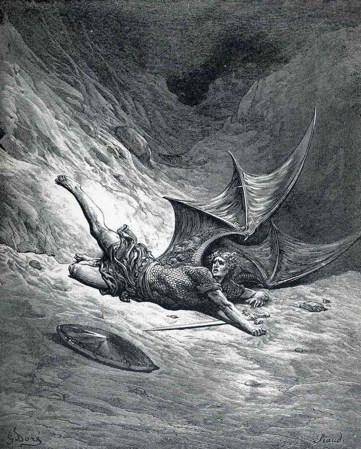
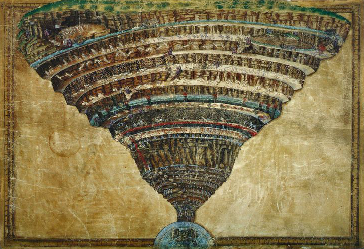

Come nasce l'Inferno
1. La Caduta
L'Inferno si è formato quando Lucifero, il più bello degli angeli, si ribellò a Dio e venne scaraventato giù dal Cielo.
2. L'Impatto
Cadendo nell'emisfero boreale (quello delle terre emerse), la terra per l'orrore si ritrasse, scavando una gigantesca voragine a forma di imbuto che arriva fino al centro del pianeta.
3. Il Purgatorio
La terra espulsa da questo impatto riemerse nell'emisfero australe (quello delle acque), formando la montagna del Purgatorio.

La Legge del Contrappasso
La struttura morale dell'Inferno è retta dalla Legge del Contrappasso (dal latino contra e patior, "soffrire il contrario"). La pena inflitta ai dannati è legata al peccato commesso in vita per:
1. Analogia
La pena somiglia al peccato (es. i lussuriosi, travolti dalla passione, sono travolti da una bufera eterna).
2. Contrappasso
La pena è l'opposto del peccato (es. gli ignavi, che non seguirono alcun ideale, ora devono correre dietro a una bandiera senza senso).

I 9 Cerchi
L'Antinferno e il Limbo
Prima dell'Inferno vero e proprio troviamo l'Antinferno, dove corrono gli ignavi (coloro che non scelsero né il bene né il male). Oltre il fiume Acheronte, inizia il primo cerchio: il Limbo, dove risiedono i pagani virtuosi e i bambini non battezzati.
Alto Inferno (Incontinenza)
Dal secondo al quinto cerchio sono puniti i peccati di incontinenza (mancanza di controllo sugli impulsi naturali):
▸ II: Lussuriosi
▸ III: Golosi
▸ IV: Avari e Prodighi
▸ V: Iracondi e Accidiosi (nella palude dello Stige)
Basso Inferno (Malizia e Bestialità)
Dopo le mura della Città di Dite, sorvegliata dai diavoli e dalle Furie, si scende nei peccati più gravi, quelli commessi con la volontà e la ragione:
▸ VI: Eretici (chiusi in tombe infuocate)
▸ VII: Violenti (divisi in tre gironi: contro il prossimo, contro sé stessi/suicidi, contro Dio/natura/arte)
▸ VIII: Fraudolenti (le Malebolge, 10 fossati dove si puniscono traditori, adulatori, simoniaci, maghi, barattieri, ecc.)
▸ IX: Traditori (immersi nel ghiaccio del lago Cocito)
